Introduction
The statsExpressions package has two key aims:
- to provide a consistent syntax to do statistical analysis with tidy data (in pipe-friendly manner),
- to provide statistical expressions (pre-formatted in-text statistical results) for plotting functions.
Statistical packages exhibit substantial diversity in terms of their syntax and expected input type. This can make it difficult to switch from one statistical approach to another. For example, some functions expect vectors as inputs, while others expect dataframes. Depending on whether it is a repeated measures design or not, different functions might expect data to be in wide or long format. Some functions can internally omit missing values, while other functions error in their presence. Furthermore, if someone wishes to utilize the objects returned by these packages downstream in their workflow, this is not straightforward either because even functions from the same package can return a list, a matrix, an array, a dataframe, etc., depending on the function.
This is where statsExpressions comes in: It can be thought of as a unified portal through which most of the functionality in these underlying packages can be accessed, with a simpler interface and no requirement to change data format.
This package forms the statistical processing backend for ggstatsplot package.
For more documentation, see the dedicated website.
Installation
Note: This package supports R-devel, the current R release, and the previous R release.
| Type | Command |
|---|---|
| Release | install.packages("statsExpressions") |
| Development | pak::pak("IndrajeetPatil/statsExpressions") |
On Linux, statsExpressions installation may require additional system dependencies, which can be checked using:
pak::pkg_sysreqs("statsExpressions")Citation
The package can be cited as:
citation("statsExpressions")
To cite package 'statsExpressions' in publications use:
Patil, I., (2021). statsExpressions: R Package for Tidy Dataframes
and Expressions with Statistical Details. Journal of Open Source
Software, 6(61), 3236, https://doi.org/10.21105/joss.03236
A BibTeX entry for LaTeX users is
@Article{,
doi = {10.21105/joss.03236},
year = {2021},
publisher = {{The Open Journal}},
volume = {6},
number = {61},
pages = {3236},
author = {Indrajeet Patil},
title = {{statsExpressions: {R} Package for Tidy Dataframes and Expressions with Statistical Details}},
journal = {{Journal of Open Source Software}},
}
Summary of functionality
| Function | Analysis | Parametric | Non-parametric | Robust | Bayesian |
|---|---|---|---|---|---|
one_sample_test() |
one-sample test | ✅ | ✅ | ✅ | ✅ |
two_sample_test() |
two-sample test | ✅ | ✅ | ✅ | ✅ |
oneway_anova() |
one-way ANOVA | ✅ | ✅ | ✅ | ✅ |
corr_test() |
correlation | ✅ | ✅ | ✅ | ✅ |
contingency_table() |
one- or two-way contingency table | ✅ | ✅ | ❌ | ✅ |
meta_analysis() |
random-effects meta-analysis | ✅ | ❌ | ✅ | ✅ |
pairwise_comparisons() |
pairwise group comparisons | ✅ | ✅ | ✅ | ✅ |
centrality_description() |
centrality and distribution | ✅ | ✅ | ✅ | ✅ |
❌ means that no dedicated analysis of that type exists. For contingency tables, type = "nonparametric" and type = "robust" both use the same frequentist tests as type = "parametric".
pairwise_contingency_table() provides pairwise Fisher’s exact tests with Cramer’s V effect sizes. It does not have a type argument.
Tidy dataframes from statistical analysis
To illustrate the simplicity of this syntax, let’s say we want to run a one-way ANOVA. If we first run a non-parametric ANOVA and then decide to run a robust ANOVA instead, the syntax remains the same and the statistical approach can be modified by changing a single argument:
mtcars |> oneway_anova(cyl, wt, type = "nonparametric")
#> # A tibble: 1 × 15
#> parameter1 parameter2 statistic df.error p.value
#> <chr> <chr> <dbl> <int> <dbl>
#> 1 wt cyl 22.8 2 0.0000112
#> method effectsize estimate conf.level conf.low
#> <chr> <chr> <dbl> <dbl> <dbl>
#> 1 Kruskal-Wallis rank sum test Epsilon2 (rank) 0.736 0.95 0.624
#> conf.high conf.method conf.iterations n.obs expression
#> <dbl> <chr> <int> <int> <list>
#> 1 1 percentile bootstrap 100 32 <language>
mtcars |> oneway_anova(cyl, wt, type = "robust")
#> # A tibble: 1 × 12
#> statistic df df.error p.value
#> <dbl> <dbl> <dbl> <dbl>
#> 1 12.7 2 12.2 0.00102
#> method
#> <chr>
#> 1 A heteroscedastic one-way ANOVA for trimmed means
#> effectsize estimate conf.level conf.low conf.high
#> <chr> <dbl> <dbl> <dbl> <dbl>
#> 1 Explanatory measure of effect size 1.05 0.95 0.843 1.50
#> n.obs expression
#> <int> <list>
#> 1 32 <language>For worked examples of these data frames, see Data frame outputs; for their columns and attributes, see Return value schema.
The data frames also work with knitr::kable() to generate a table:
set.seed(123)
# one-sample robust t-test
# we will leave `expression` column out; it's not needed for using only the dataframe
mtcars |>
one_sample_test(wt, test.value = 3, type = "robust") |>
dplyr::select(-expression) |>
knitr::kable()| statistic | p.value | n.obs | method | effectsize | estimate | conf.level | conf.low | conf.high |
|---|---|---|---|---|---|---|---|---|
| 1.179181 | 0.275 | 32 | Bootstrap-t method for one-sample test | Trimmed mean | 3.197 | 0.95 | 2.854246 | 3.539754 |
These functions are also compatible with other popular data manipulation packages.
For example, let’s say we want to run a one-sample t-test for all levels of a certain grouping variable. We can use dplyr to do so:
# for reproducibility
set.seed(123)
library(dplyr)
# grouped operation
# running one-sample test for all levels of grouping variable `cyl`
mtcars |>
group_by(cyl) |>
group_modify(~ one_sample_test(.x, wt, test.value = 3), .keep = TRUE) |>
ungroup()
#> # A tibble: 3 × 16
#> cyl mu statistic df.error p.value method alternative
#> <dbl> <dbl> <dbl> <dbl> <dbl> <chr> <chr>
#> 1 4 3 -4.16 10 0.00195 One Sample t-test two.sided
#> 2 6 3 0.870 6 0.418 One Sample t-test two.sided
#> 3 8 3 4.92 13 0.000278 One Sample t-test two.sided
#> effectsize estimate conf.level conf.low conf.high conf.method
#> <chr> <dbl> <dbl> <dbl> <dbl> <chr>
#> 1 Hedges' g -1.16 0.95 -1.88 -0.402 ncp
#> 2 Hedges' g 0.286 0.95 -0.388 0.937 ncp
#> 3 Hedges' g 1.24 0.95 0.544 1.91 ncp
#> conf.distribution n.obs expression
#> <chr> <int> <list>
#> 1 t 11 <language>
#> 2 t 7 <language>
#> 3 t 14 <language>Using expressions in custom plots
Note that expression here means a pre-formatted in-text statistical result. In addition to other details contained in the dataframe, there is also a column titled expression, which contains expression with statistical details and can be displayed in a plot.
For all statistical test expressions, the default template attempts to follow the gold standard for statistical reporting.
For example, here are results from Welch’s t-test:
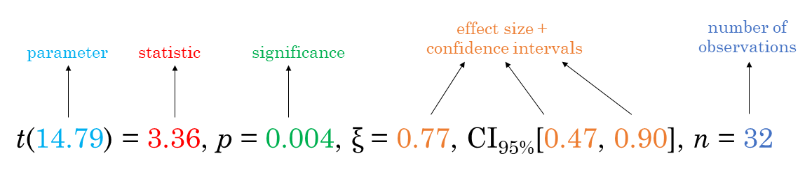
To display a single result in a plot, you have two options:
- extract the expression from the list column (
results_data$expression[[1]]) without parsing - use the list column as is, in which case you will need to parse it (
parse(text = results_data$expression))
For several row-specific labels in a geometric layer, map expression to label and use parse = TRUE, as in the centrality example below.
Here are a few examples for supported analyses. Let’s load the needed library for visualization:
Expressions for centrality measure
# displaying mean for each level of `cyl`
centrality_description(mtcars, cyl, wt) |>
ggplot(aes(cyl, wt)) +
geom_point() +
geom_label(aes(label = expression), parse = TRUE)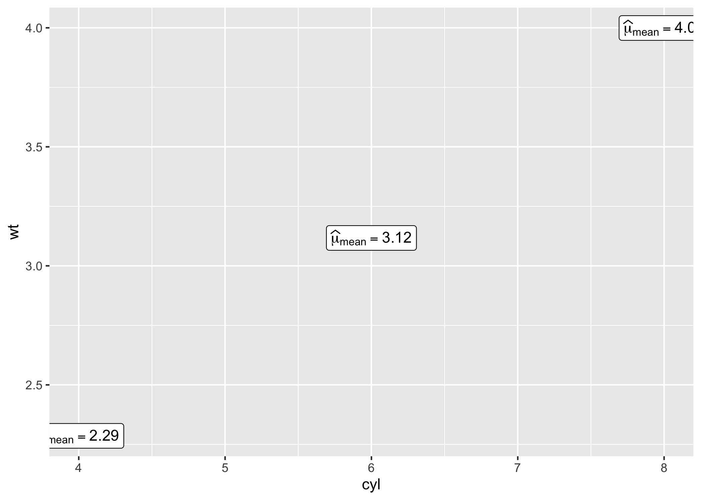
Expressions for one-way ANOVAs
Between-subjects design
set.seed(123)
library(ggridges)
results_data <- oneway_anova(iris, Species, Sepal.Length, type = "robust")
# create a ridgeplot
ggplot(iris, aes(x = Sepal.Length, y = Species)) +
geom_density_ridges() +
labs(
title = "A heteroscedastic one-way ANOVA for trimmed means",
subtitle = results_data$expression[[1]]
)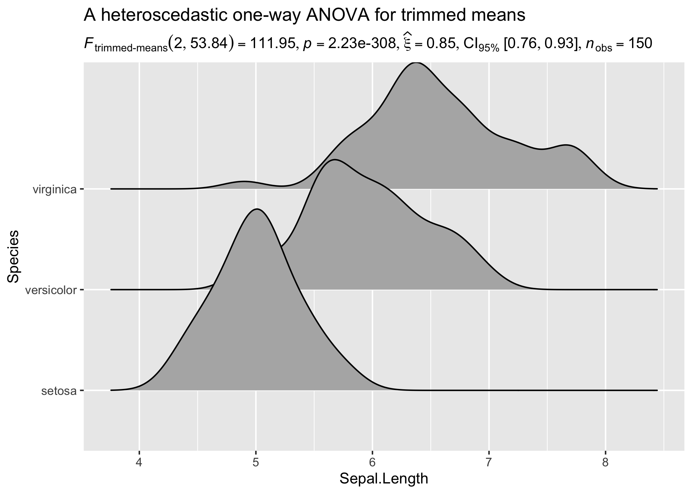
Within-subjects design
set.seed(123)
library(WRS2)
library(ggbeeswarm)
results_data <- oneway_anova(
WineTasting,
Wine,
Taste,
paired = TRUE,
subject.id = Taster,
type = "np"
)
ggplot(WineTasting, aes(Wine, Taste, color = Wine)) +
geom_quasirandom() +
labs(
title = "Friedman's rank sum test",
subtitle = parse(text = results_data$expression)
)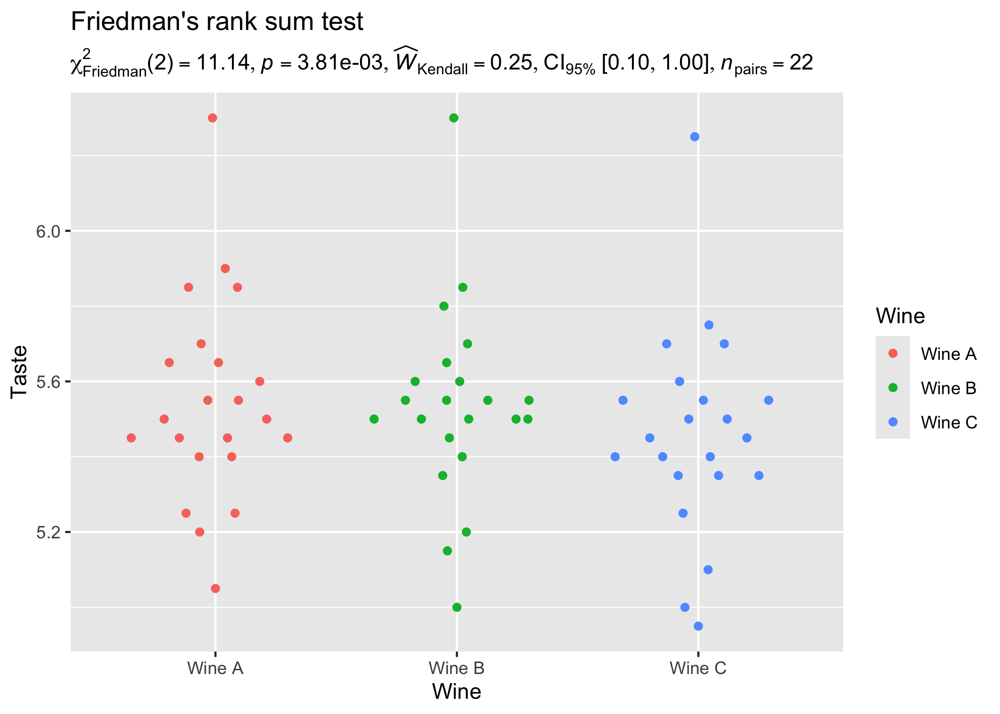
Expressions for two-sample tests
Between-subjects design
set.seed(123)
results_data <- two_sample_test(ToothGrowth, supp, len)
ggplot(ToothGrowth, aes(supp, len)) +
geom_boxplot() +
labs(
title = "Two-Sample Welch's t-test",
subtitle = parse(text = results_data$expression)
)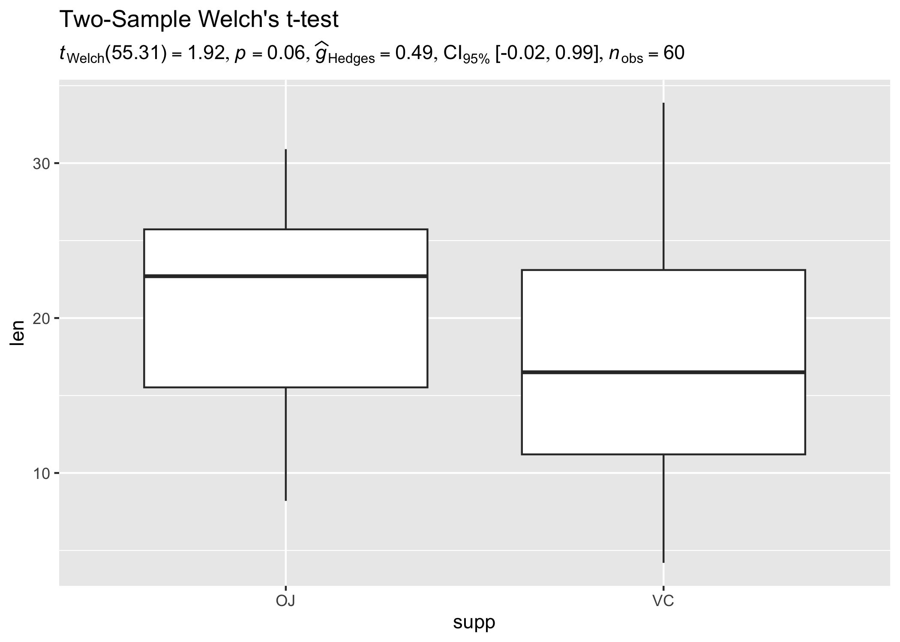
Within-subjects design
set.seed(123)
library(tidyr)
library(PairedData)
data(PrisonStress)
# get data in tidy format
df <- pivot_longer(PrisonStress, starts_with("PSS"), names_to = "PSS", values_to = "stress")
results_data <- two_sample_test(
data = df,
x = PSS,
y = stress,
paired = TRUE,
subject.id = Subject,
type = "np"
)
# plot
suppressWarnings(paired.plotProfiles(
PrisonStress, "PSSbefore", "PSSafter",
subjects = "Subject"
)) +
labs(
title = "Two-sample Wilcoxon paired test",
subtitle = parse(text = results_data$expression)
)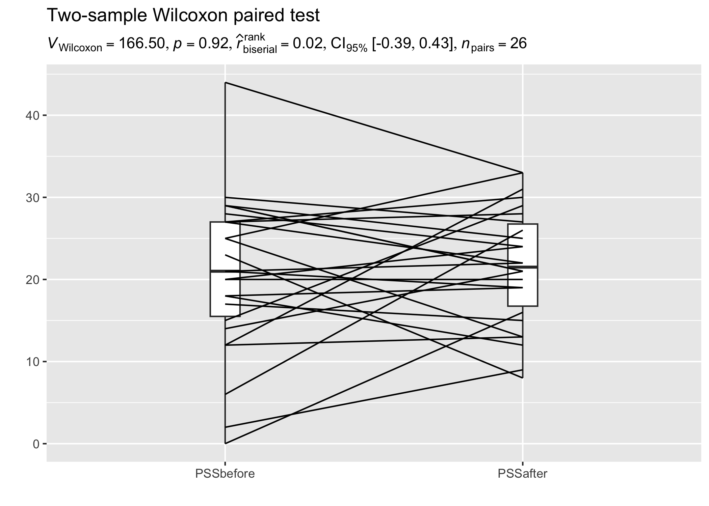
Expressions for one-sample tests
set.seed(123)
# dataframe with results
results_data <- one_sample_test(mtcars, wt, test.value = 3, type = "bayes")
# creating a histogram plot
ggplot(mtcars, aes(wt)) +
geom_histogram(alpha = 0.5) +
geom_vline(xintercept = mean(mtcars$wt), color = "red") +
labs(subtitle = parse(text = results_data$expression))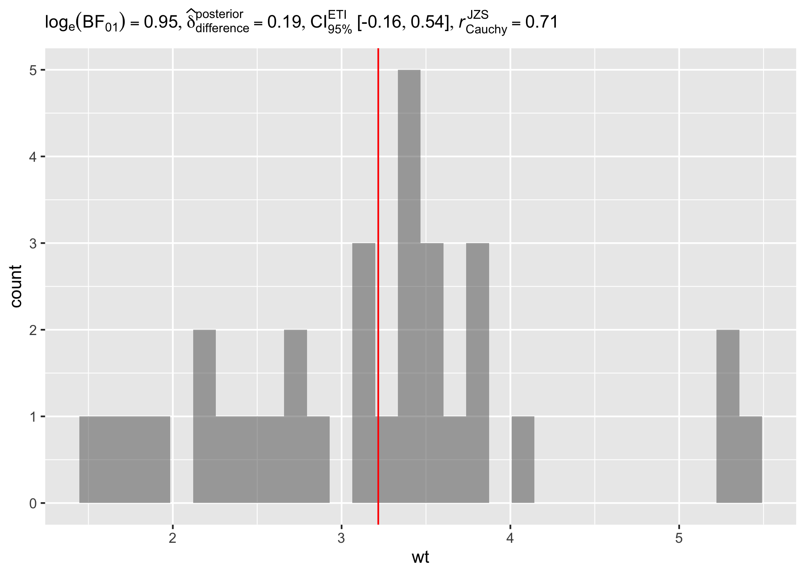
Expressions for correlation analysis
Let’s look at another example where we want to run correlation analysis:
set.seed(123)
# dataframe with results
results_data <- corr_test(mtcars, mpg, wt, type = "nonparametric")
# create a scatter plot
ggplot(mtcars, aes(mpg, wt)) +
geom_point() +
geom_smooth(method = "lm", formula = y ~ x) +
labs(
title = "Spearman's rank correlation coefficient",
subtitle = parse(text = results_data$expression)
)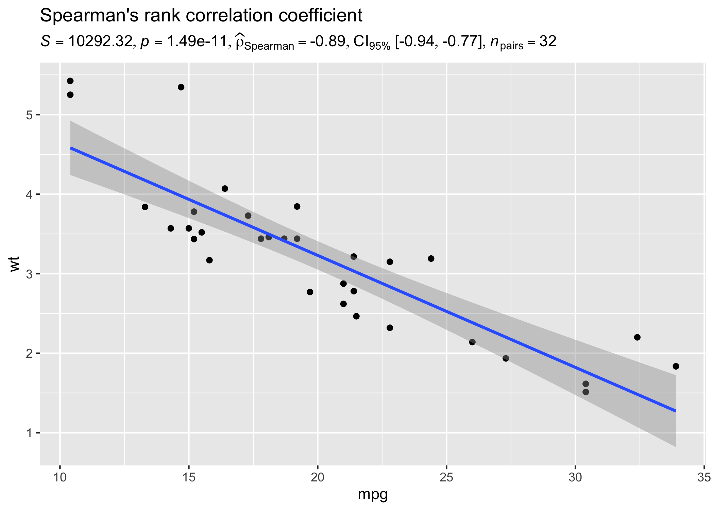
Expressions for contingency table analysis
For categorical/nominal data - one-sample:
set.seed(123)
# dataframe with results
results_data <- contingency_table(
as.data.frame(table(mpg$class)),
Var1,
counts = Freq,
type = "bayes"
)
# create a pie chart
ggplot(as.data.frame(table(mpg$class)), aes(x = "", y = Freq, fill = factor(Var1))) +
geom_bar(width = 1, stat = "identity") +
theme(axis.line = element_blank()) +
# cleaning up the chart and adding results from one-sample proportion test
coord_polar(theta = "y", start = 0) +
labs(
fill = "Class",
x = NULL,
y = NULL,
title = "Pie Chart of class (type of car)",
caption = parse(text = results_data$expression)
)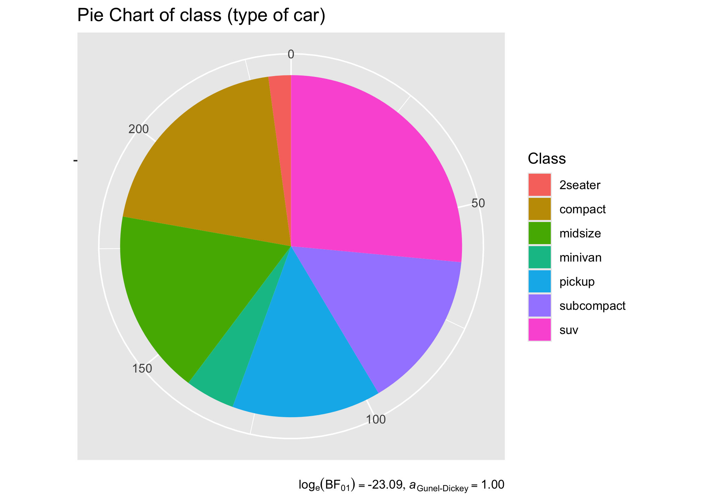
You can also use these functions to get the expression in return without having to display them in plots:
set.seed(123)
# Pearson's chi-squared test of independence
contingency_table(mtcars, am, vs)$expression[[1]]
#> list(chi["Pearson"]^2 * "(" * 1 * ")" == "0.91", italic(p) ==
#> "0.34", widehat(italic("V"))["Cramer"] == "0.00", CI["95%"] ~
#> "[" * "0.00", "0.49" * "]", italic("n")["obs"] == "32")Expressions for meta-analysis
set.seed(123)
library(metaviz)
# dataframe with results
results_data <- meta_analysis(dplyr::rename(mozart, estimate = d, std.error = se))
# meta-analysis forest plot with results random-effects meta-analysis
suppressWarnings(viz_forest(
x = mozart[, c("d", "se")],
study_labels = mozart[, "study_name"],
xlab = "Cohen's d",
variant = "thick",
type = "cumulative"
)) +
labs(
title = "Meta-analysis of Pietschnig, Voracek, and Formann (2010) on the Mozart effect",
subtitle = parse(text = results_data$expression)
) +
theme(text = element_text(size = 12))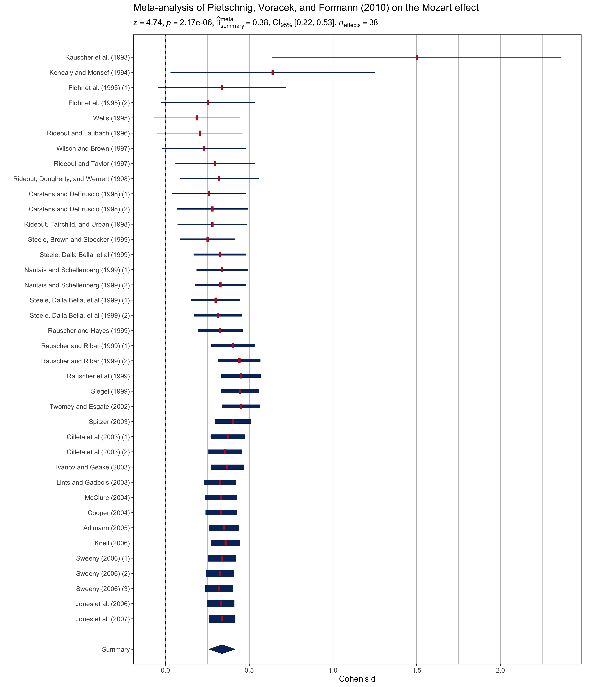
Customizing details to your liking
Sometimes you may not wish to include so many details in the subtitle. In that case, you can extract the expression and copy-paste only the part you wish to include. For example, here only statistic and p-values are included:
set.seed(123)
# extracting detailed expression
(res_expr <- oneway_anova(iris, Species, Sepal.Length, var.equal = TRUE)$expression[[1]])
#> list(italic("F")["Fisher"](2, 147) == "119.26", italic(p) ==
#> "1.67e-31", widehat(omega["p"]^2) == "0.61", CI["95%"] ~
#> "[" * "0.53", "1.00" * "]", italic("n")["obs"] == "150")
# adapting the details to your liking
ggplot(iris, aes(x = Species, y = Sepal.Length)) +
geom_boxplot() +
labs(subtitle = ggplot2::expr(paste(
NULL, italic("F"), "(", "2", ",", "147", ") = ", "119.26", ", ",
italic("p"), " = ", "1.67e-31"
)))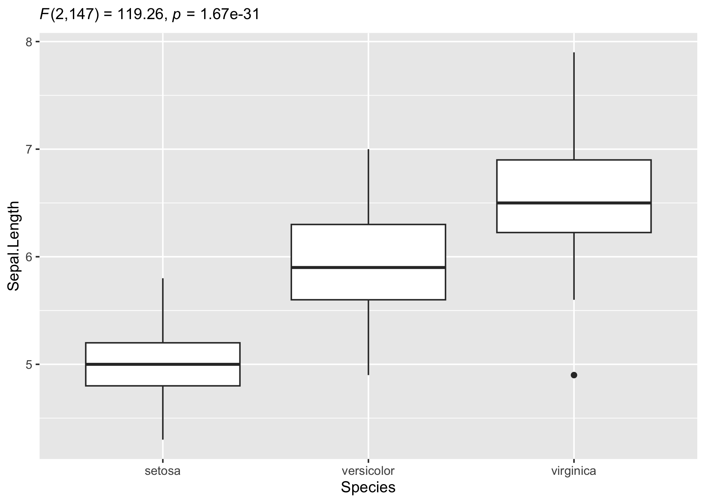
Tests and effect sizes
See Test and effect size details for the methods, effect sizes, and underlying functions used by each analysis. The same method tables are included in the individual function help pages.
Usage in {ggstatsplot}
Note that these functions were initially written to display results from statistical tests on ready-made ggplot2 plots implemented in ggstatsplot.
For detailed documentation, see the package website: https://www.indrapatil.com/ggstatsplot/
Here is an example from ggstatsplot of what the plots look like when the expressions are displayed in the subtitle:
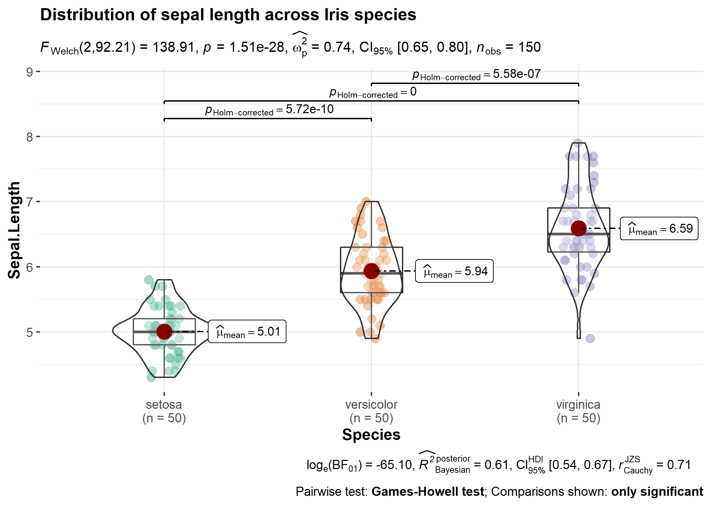